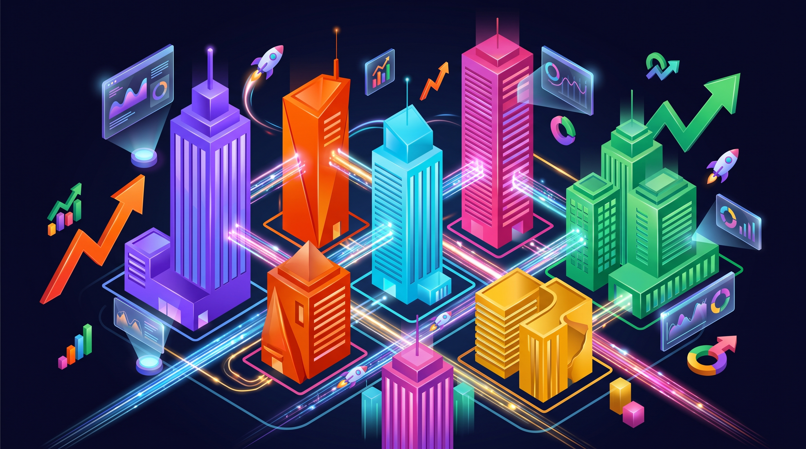
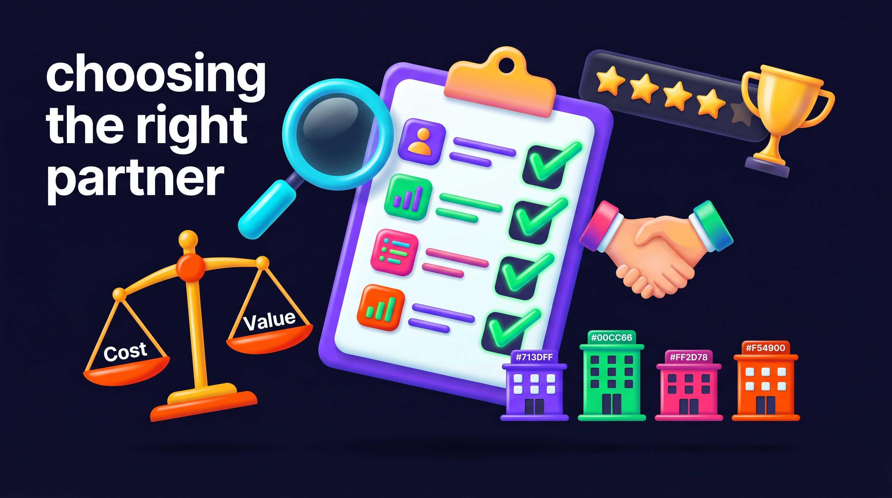

Elegir una agencia de marketing digital en República Dominicana no es fácil. El mercado creció rápido, hay decenas de opciones, y la mayoría promete lo mismo: "más ventas", "más alcance", "resultados garantizados". Pero cuando revisas los números, pocas entregan lo que venden.
Con más de 6 millones de dominicanos conectados a internet y el 82% usando redes sociales activamente, el marketing digital dejó de ser opcional para cualquier negocio en RD. El problema no es si necesitas presencia digital — es con quién la construyes.
En esta guía analizamos las agencias de marketing digital más relevantes en República Dominicana en 2026. No es un listado genérico — cada agencia fue evaluada por sus servicios reales, casos documentados y enfoque. Al final, vas a tener claro cuál se ajusta a tu negocio y presupuesto.

El Mercado Digital en RD — 2026
Qué Hace a una Agencia de Marketing Digital Realmente Buena
Antes de ver el ranking, necesitas saber qué separar el ruido de lo real. Una agencia buena no es la que tiene el mejor logo o la oficina más bonita. Es la que puede demostrarte con números que lo que hace funciona.
Estos son los criterios que usamos para evaluar cada agencia en este ranking:
- Resultados documentados: ¿Tienen casos de estudio con métricas reales? No testimonios genéricos — números: leads generados, costo por adquisición, retorno sobre inversión.
- Especialización: Las mejores agencias no hacen "de todo". Se especializan en un tipo de servicio o industria y lo dominan.
- Transparencia en precios: Si una agencia no puede darte un rango de precios claro desde el primer contacto, es una bandera roja.
- Stack tecnológico: ¿Usan herramientas profesionales? CRM, plataformas de automatización, analytics avanzado — o todo lo hacen "a mano".
- Comunicación: ¿Recibes reportes mensuales? ¿Puedes hablar con alguien cuando tienes una pregunta? La comunicación es donde la mayoría falla.
- Enfoque en conversión: Likes y seguidores no pagan facturas. La agencia debe estar obsesionada con convertir tráfico en clientes reales.
Checklist: 8 Criterios para Evaluar una Agencia
Las 10 Mejores Agencias de Marketing Digital en República Dominicana
Este ranking está basado en investigación directa, presencia digital verificable, servicios documentados y reputación en el mercado dominicano. No está patrocinado por ninguna agencia — es nuestra evaluación honesta del mercado en 2026.
Comparativa: Top 10 Agencias de Marketing Digital en RD
Veamos cada una en detalle.
1. MM Agency — Marketing de Resultados
MM Agency es una agencia basada en Santo Domingo enfocada exclusivamente en una cosa: construir sistemas de marketing que generen clientes de forma predecible. No gestionan redes sociales ni hacen "community management" — se especializan en el lado del marketing que genera dinero: embudos de venta, tráfico pagado, CRM y automatización.
Su enfoque es diferente al de la mayoría de agencias en RD. En vez de ofrecer paquetes mensuales genéricos, construyen un sistema completo de adquisición de clientes — desde la landing page hasta la automatización del seguimiento por WhatsApp. La idea es que el negocio tenga una máquina de generar leads que funcione 24/7.
Servicios principales:
- Landing pages de alta conversión diseñadas para el mercado dominicano
- Campañas de Meta Ads y Google Ads con optimización semanal
- CRM con automatización de seguimiento (WhatsApp, email, SMS)
- Embudos de venta completos con métricas en tiempo real
- Reportes mensuales con costo por lead, tasa de conversión y ROI
Caso de estudio: Para una doctora en Santo Domingo, MM Agency construyó un embudo completo — landing page + Meta Ads + CRM — que generó 85 pacientes nuevos en 60 días con una inversión de US$300/mes en pauta. El costo por paciente nuevo fue de US$3.52. Ver el caso completo.
Ideal para: PYMEs dominicanas que quieren un sistema completo de generación de clientes, no solo "presencia en redes". Especialmente negocios de servicios (clínicas, consultorios, academias, servicios profesionales) que necesitan leads calificados.
Rango de precios: Setup desde US$2,000 + gestión mensual desde US$600.
AGENDA UNA CONSULTA GRATIS CON MM AGENCY2. Caribe Media
Con más de 55 años en la industria publicitaria dominicana, Caribe Media es una de las tres únicas empresas en RD con certificación Google Partner Premier. Su fortaleza está en combinar medios tradicionales con digital — algo que pocas agencias pueden hacer.
Servicios principales: Google Ads, Facebook Ads, planificación de medios, desarrollo web, producción audiovisual.
Ideal para: Empresas medianas y grandes que necesitan campañas multicanal (TV + digital) y tienen presupuestos significativos.
3. Gmedia
Gmedia lleva más de 16 años en el mercado dominicano. Su posicionamiento es el de una agencia "creativa con mindset analítico". Se especializan en SEO y gestión de redes sociales, con un enfoque fuerte en branding y contenido orgánico.
Servicios principales: SEO, social media marketing, branding, desarrollo web, publicidad digital.
Ideal para: Negocios que quieren construir presencia orgánica a largo plazo y necesitan una estrategia de contenido sólida.
4. Monkey is Marketing
Monkey is Marketing se enfoca en resultados comerciales tangibles. Su especialidad es la generación de leads a través de Google Ads y SEO. Tienen contenido educativo extenso en su blog, lo que demuestra dominio del tema.
Servicios principales: Google Ads, SEO, auditorías digitales, estrategia de marketing digital, redes sociales.
Ideal para: Negocios que dependen de búsquedas en Google para captar clientes (servicios profesionales, legal, salud).
5. ToGrow Agencia
ToGrow se ha posicionado como una agencia orientada a resultados con fuerte presencia en redes sociales. Su enfoque combina creatividad con análisis de datos para campañas que generen engagement y conversiones.
Servicios principales: Gestión de redes sociales, pauta pagada, branding, creación de contenido, consultoría digital.
Ideal para: Marcas que necesitan mejorar su presencia en Instagram y Facebook con contenido profesional y campañas pagadas.
6. Seonet Digital
Con más de 15 años de experiencia internacional, Seonet es certificada Google Partner y se especializa en posicionamiento SEO y performance marketing. Su experiencia internacional les da una perspectiva más amplia que muchas agencias locales.
Servicios principales: SEO técnico y de contenido, SEM, performance marketing, analítica web.
Ideal para: E-commerce y negocios que necesitan posicionamiento orgánico agresivo y campañas de performance con tracking avanzado.
7. Conker Agency
Conker Agency tiene presencia en Colombia y República Dominicana. Se posicionan como líderes en estrategias personalizadas que generan tráfico y conversiones. Su fortaleza está en SEM y estrategias digitales integrales.
Servicios principales: SEO, SEM, gestión de redes sociales, estrategia digital, desarrollo web.
Ideal para: Empresas con presupuesto medio-alto que buscan una agencia con experiencia regional (no solo local).
8. Blue Design
Blue Design combina marketing digital con producción audiovisual de alta calidad. Si tu marca necesita videos profesionales, fotografía y contenido visual además de las campañas digitales, es una opción sólida.
Servicios principales: Publicidad digital, producción audiovisual, diseño gráfico, redes sociales, posicionamiento SEO.
Ideal para: Marcas que necesitan contenido visual profesional como parte central de su estrategia (restaurantes, hoteles, moda, bienes raíces).
9. Grupo Interactivo
Grupo Interactivo tiene sede en Santo Domingo y se especializa en Google Ads y desarrollo web. Ofrecen un servicio más técnico, enfocado en la infraestructura digital del negocio.
Servicios principales: Google Ads, desarrollo web, SEO, aplicaciones móviles.
Ideal para: Negocios que necesitan tanto una web profesional como campañas de Google Ads bien gestionadas.
10. Marketing Online RD
Marketing Online RD es una agencia especializada en generación de tráfico y e-commerce. Su experiencia con Adwords (ahora Google Ads) y redes sociales les da un perfil versátil para el retail digital.
Servicios principales: Google Ads, redes sociales, e-commerce, desarrollo web, marketing de contenidos.
Ideal para: Tiendas online y negocios de retail que necesitan tráfico calificado hacia su e-commerce.
MM Agency — Por Qué Somos Diferentes
Seamos transparentes: este artículo lo publica MM Agency. Pero hay una razón por la que nos pusimos en esta lista — y no es solo porque podemos.
La mayoría de agencias en República Dominicana venden servicios sueltos: "te manejo las redes", "te hago una web", "te pongo un anuncio". El problema es que esas piezas sueltas no generan un flujo predecible de clientes. Es como tener un motor, cuatro llantas y un volante — pero sin ensamblar el carro.
En MM Agency construimos el carro completo. Nuestro proceso de 4 fases conecta cada pieza del marketing digital en un solo sistema:
- Fase 1 — Landing page de conversión: No una web bonita. Una página diseñada para que el visitante tome acción: llene un formulario, escriba por WhatsApp, o agende una cita.
- Fase 2 — Tráfico pagado: Campañas de Meta Ads y Google Ads que llevan personas calificadas a esa landing page. Con segmentación por zona, intereses y comportamiento.
- Fase 3 — CRM + automatización: Cada lead que entra se captura en un CRM. Se le da seguimiento automático por WhatsApp y email. Nada se pierde.
- Fase 4 — Optimización continua: Cada semana revisamos qué funciona y qué no. Ajustamos copy, audiencias, presupuesto. El sistema mejora con el tiempo.
¿El resultado? Negocios en RD que pasan de depender del boca a boca a tener un flujo predecible de leads calificados cada mes. Agenda una consulta gratis y te mostramos exactamente cómo funcionaría para tu negocio.
Cómo Elegir la Agencia Correcta para Tu Negocio
No existe la "mejor agencia" en absoluto — existe la mejor agencia para tu negocio. Lo que necesita un restaurante en la Zona Colonial es diferente a lo que necesita un e-commerce de ropa o una clínica en Santiago.
Para elegir bien, responde estas preguntas:
¿Cuál es tu objetivo principal?
- Generar leads/clientes: Necesitas una agencia enfocada en conversión (embudos, CRM, pauta pagada)
- Construir marca: Necesitas una agencia de branding y contenido
- Posicionarte en Google: Necesitas una agencia con especialidad SEO
- Vender por e-commerce: Necesitas una agencia con experiencia en tiendas online
¿Cuál es tu presupuesto real?
Sé honesto contigo mismo. Si tu presupuesto total (incluyendo pauta) es menor a US$500/mes, probablemente necesitas un freelancer o hacerlo tú mismo por ahora. Las agencias serias empiezan desde US$600-1,000/mes de gestión más el presupuesto de publicidad.
¿Necesitas un servicio puntual o continuo?
Algunas agencias son mejores para proyectos puntuales (una web, un embudo) y otras para gestión continua (campañas mensuales, contenido). Define qué necesitas antes de buscar.

Cuánto Cuesta Contratar una Agencia de Marketing Digital en RD
Esta es la pregunta que todos hacen y pocos responden con honestidad. Aquí van los números reales del mercado dominicano en 2026.
Precios de Agencias de Marketing Digital en RD (2026)
La inversión mínima realista para un negocio que quiere resultados en RD es de US$500-800/mes totales (gestión + pauta). Menos que eso no genera suficientes datos para optimizar campañas ni genera un volumen de leads significativo.
Señales de Alerta: Cómo Detectar una Agencia que No Entrega
El mercado dominicano tiene agencias excelentes — pero también tiene muchas que venden humo. Estas son las banderas rojas que debes vigilar:
- "Garantizamos resultados": Nadie puede garantizar resultados en marketing digital. Pueden garantizar entregables (X posts, X campañas), pero no conversiones. Si alguien te "garantiza" 100 clientes, es mentira.
- No muestran casos reales: Si una agencia no puede mostrarte al menos 2-3 casos de estudio con métricas, probablemente no los tiene.
- Te cobran por todo junto sin desglose: Necesitas saber exactamente cuánto va a gestión, cuánto a pauta, cuánto a diseño. Sin desglose, no puedes evaluar si es justo.
- No te dan acceso a tus cuentas: Tu página de Facebook, tu cuenta de Google Ads, tu CRM — todo debe estar a tu nombre. Si la agencia controla tus cuentas y no te da acceso, es una trampa.
- Reportes con métricas de vanidad: Si el reporte mensual habla de "alcance" e "impresiones" pero no de leads, costo por lead y conversiones, están midiendo lo que no importa.
- Contratos de largo plazo obligatorios: Compromisos de 6-12 meses sin opción de salida son una señal de que la agencia no confía en que sus resultados te retengan.
Agencia vs Freelancer vs Hacerlo Tú Mismo — Qué Conviene
No siempre necesitas una agencia. Dependiendo de tu etapa, presupuesto y tiempo disponible, puede que un freelancer o el DIY sea mejor opción. Aquí la comparación honesta.
Agencia vs Freelancer vs Hacerlo Tú Mismo
La recomendación real: Si tu negocio factura menos de US$3,000/mes, empieza con un freelancer o aprende lo básico tú mismo. Cuando llegues a US$5,000+ de facturación mensual y necesites escalar, es hora de contratar una agencia.
Si ya estás en ese punto y quieres un sistema que escale contigo, habla con nosotros.
8 Preguntas que Debes Hacer Antes de Contratar una Agencia
Antes de firmar cualquier contrato, haz estas preguntas. Las respuestas te dirán todo lo que necesitas saber.
- "¿Pueden mostrarme un caso de estudio con métricas reales?" — Si no pueden, siguiente.
- "¿Cuánto de mi presupuesto va a pauta y cuánto a gestión?" — El desglose debe ser claro desde el día uno.
- "¿Las cuentas publicitarias van a mi nombre?" — La respuesta correcta es sí, siempre.
- "¿Cada cuánto recibo reportes y qué métricas incluyen?" — Mínimo mensual, con leads, costo por lead y conversiones.
- "¿Cuál es su proceso de trabajo?" — Una buena agencia tiene un proceso documentado, no improvisa.
- "¿Qué pasa si quiero cancelar?" — Busca flexibilidad. Compromisos de más de 3 meses sin resultados son riesgosos.
- "¿Quién va a ser mi punto de contacto?" — Necesitas saber con quién hablas, no que te manden de persona en persona.
- "¿Qué herramientas usan?" — CRM, plataformas de analytics, herramientas de gestión. Esto habla de su nivel de profesionalismo.
Agencias de Marketing Digital en RD: FAQs
Conclusión
El mercado de agencias de marketing digital en República Dominicana está madurando. Hay opciones para todos los presupuestos y necesidades — desde agencias grandes con décadas de experiencia hasta agencias especializadas enfocadas en nichos específicos.
Lo más importante no es elegir la agencia "más famosa" o la "más barata". Es elegir la que se ajuste a tu objetivo, tu presupuesto y tu forma de trabajar. Usa los criterios de esta guía, haz las preguntas correctas, y no firmes nada sin ver casos de estudio reales.
Si tu objetivo es construir un sistema de marketing que genere clientes de forma predecible — no solo "tener presencia digital" — conversemos. En MM Agency nos especializamos exactamente en eso: embudos de venta, tráfico pagado y CRM para negocios en República Dominicana que quieren crecer con números, no con promesas.

0 Comentarios